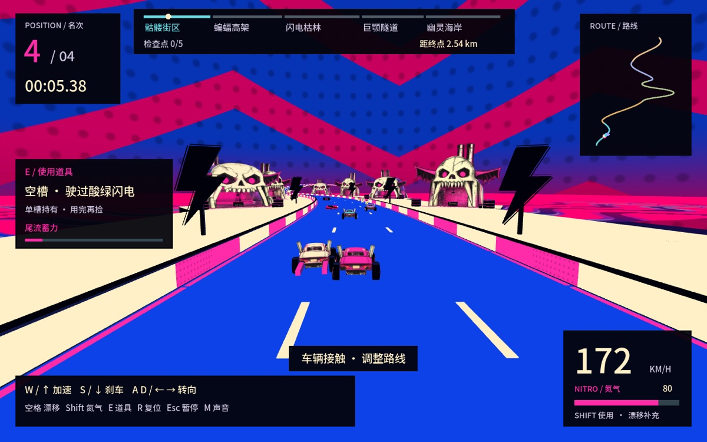
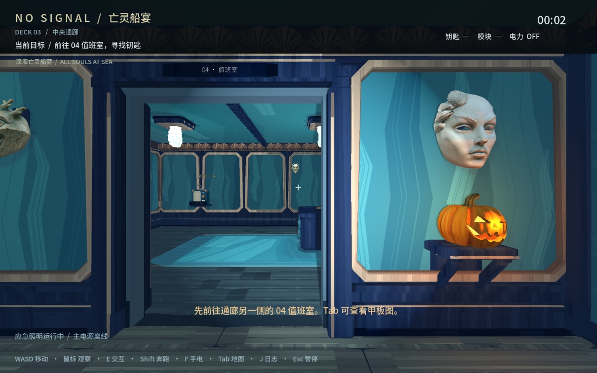

01街机竞速 / 单人 · 3 种风格五境疾驰COASTLINE一条连续赛道，三种风景。选择风格，开始竞速。 落日海岸暖阳海岸 · finish-v1开始试玩 ↗ 极夜工业港雪地港湾 · harbor-v4开始试玩 ↗ 万圣夜竞速网印万圣节 · 完整赛道开始试玩 ↗
03恐怖探索 / 单人 · 2 种风格  失联航次NO SIGNAL万圣节试玩 ↗ 登上一艘失联游轮，恢复供电、调整管路，在巡逻者逼近前放下救生艇。原版灰盒 ↗万圣节 · 手绘哥特 ↗